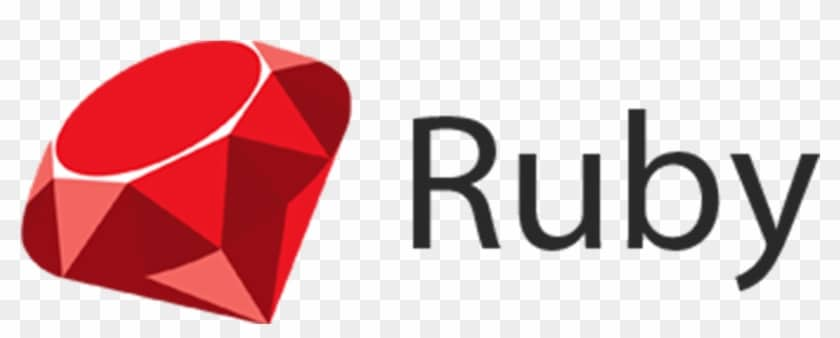

Página :: RUBY ::

História da linguagem
Ruby é uma linguagem de programação interpretada multiparadigma, de tipagem dinâmica e forte, com gerenciamento de memória automático, originalmente planejada e desenvolvida no Japão em 1995, por Yukihiro "Matz" Matsumoto, para ser usada como linguagem
de script. Matz queria uma linguagem de script que fosse mais poderosa do que Perl, e mais orientada a objetos do que Python.[4] Ruby suporta programação funcional, orientada a objetos, imperativa e reflexiva. Foi inspirada principalmente por
Python, Perl, Smalltalk, Eiffel, Ada e Lisp, sendo muito similar em vários aspectos a Python.[5] Ruby está entre as 10 linguagens mais populares, de acordo com uma pesquisa conduzida pela RedMonk. A linguagem Ruby foi concebida em 24 de fevereiro
de 1993 por Yukihiro Matsumoto, que pretendia criar uma nova linguagem que balanceava programação funcional com a programação imperativa.[5] Matsumoto afirmou: "Eu queria uma linguagem de script que fosse mais poderosa do que Perl, e mais orientada
a objetos do que Python. É por isso que eu decidi desenvolver minha própria linguagem.".[4]. Por volta de 2005, o interesse pela linguagem Ruby subiu em conjunto com o Ruby on Rails, um framework de aplicações web popular escrito em Ruby. Rails
é frequentemente creditada como a aplicação que tornou Ruby "famosa" e a associação é tão forte que ambos são muitas vezes confundidos por programadores que são novos a Ruby.[13]